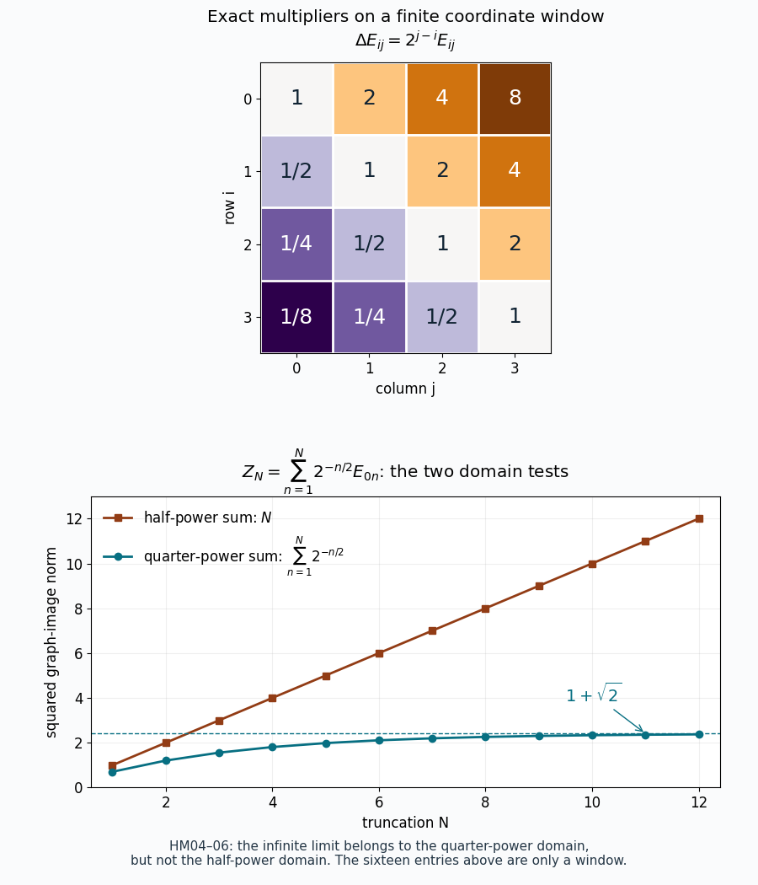

The Hilbert–Schmidt standard form and its modular domains
Independently written by OpenAI Codex (AI), October 2026. New prose: CC0-1.0. Draft.
The positive Hilbert–Schmidt operators form a standard cone for every Hilbert space, including a nonseparable one. A faithful finite functional gives additional coordinates for its modular operator; the existence of those coordinates forces the underlying space to be separable. We construct the general model first, then determine the exact domains in the faithful finite case.
The written inputs are the Hilbert space and bounded positive calculus in BK01, weak closure of commutants in BK02, increasing positive nets in BK04, the scalar-to-ultraweak normality criterion NP02, and the spectral domain calculus SK05, SK07–09. The finite-trace eigenbasis and the closed GNS involution are proved in KL09. We give the extra trace, commutant, cone and adjoint-domain arguments here. A free comparison is Hiai, Concise lectures on selected topics of von Neumann algebras, Definition 3.5 and Example 3.6(2), page 22.
All inner products are linear in the first variable. Write \(\theta_{u,v}w=\langle w,v\rangle u\). A positive sum over an arbitrary index set is the supremum of its finite subsums. The zero Hilbert space gives the zero model throughout; arguments using a unit vector concern the nonzero case.
Trace and square-summable operators in arbitrary dimension
Choose an orthonormal basis \((e_i)_{i\in I}\) of a Hilbert space \(K\). Here is the basis argument used below. A maximal orthonormal family exists by Zorn's lemma: the union of any inclusion chain of such families is orthonormal. Pythagoras bounds every finite sum of squared coefficients of a vector by its squared norm. The resulting finite partial sums form a norm Cauchy net, because the supremum of these scalar sums can be approached by a finite subsum. Completeness supplies its limit; subtracting it leaves a vector perpendicular to the family, which must be zero by maximality. This proves both completeness of the family and Parseval's identity, with finite subsets as the directed set. For \(a\in B(K)_+\), set \[ \operatorname{Tr}(a)=\sum_{i\in I}\langle ae_i,e_i\rangle =\sum_{i\in I}\|a^{1/2}e_i\|^2. \tag{HM.1} \] This does not depend on the basis. Indeed, Parseval and interchange of nonnegative sums give, for any two bases \((e_i)\), \((f_j)\) and any bounded \(b\), \[ \sum_i\|be_i\|^2 =\sum_{i,j}|\langle be_i,f_j\rangle|^2 =\sum_j\|b^*f_j\|^2. \tag{HM.2} \] For self-adjoint \(b=a^{1/2}\), this equates the two definitions in (HM.1). The interchange follows directly because either iterated supremum is the supremum over all finite subsets of the product index set; no countable enumeration of the bases is needed.
The trace is additive and positively homogeneous by its finite-sum definition. It is faithful: zero trace makes \(a^{1/2}\) vanish on a basis. It is normal: if \(a_\gamma\uparrow a\), each finite sum of quadratic values converges to its value at \(a\), and taking the two suprema in either order gives \(\sup_\gamma\operatorname{Tr}(a_\gamma)=\operatorname{Tr}(a)\). For the finite coordinate projections \(p_F\), \(a^{1/2}p_Fa^{1/2}\uparrow a\); these are positive finite-rank operators of finite trace. Thus the trace is semifinite. Equation (HM.2), using the same basis on both sides, also proves \(\operatorname{Tr}(b^*b)=\operatorname{Tr}(bb^*)\), including infinite values.
Define \[ \mathcal S_2(K)=\{Z\in B(K):\|Z\|_2^2=\operatorname{Tr}(Z^*Z)<\infty\}, \qquad \langle Z,W\rangle_2=\sum_i\langle Ze_i,We_i\rangle. \tag{HM.3} \] The inner product is basis independent by polarization of the basis-independent squared norm. Cauchy–Schwarz makes its series absolutely convergent. In matrix entries, \(\|Z\|_2^2=\sum_{i,j}|Z_{ij}|^2\). Conversely every square-summable matrix defines a bounded operator: on finite columns, rowwise Cauchy–Schwarz gives \(\|Zv\|\le\|Z\|_2\|v\|\), and completion extends it to \(K\). Its entries are the prescribed ones. The coordinate space is complete: for a norm Cauchy sequence, take its limit in each scalar coordinate; every finite sum of squared differences is bounded by the same eventual Cauchy bound. Taking the supremum over finite sums proves that the coordinate limit is square summable and that the sequence converges in norm. Thus \(\mathcal S_2(K)\) is isometric to the complete space \(\ell^2(I\times I)\), and \[ \|Z\|\le\|Z\|_2,\qquad \|Z^*\|_2=\|Z\|_2,\qquad p_F Zp_F\longrightarrow Z\quad\hbox{in }\|\cdot\|_2. \tag{HM.4} \] The last assertion is exactly convergence of finite coordinate sums. These statements also prove that finite-rank operators are dense. The trace GNS left ideal is precisely \(\mathcal S_2(K)\), its null ideal is zero, and its completion is this same Hilbert space. Its representation is left multiplication.
The commutant and the self-dual positive cone
For \(a,b\in B(K)\), let \(L_aZ=aZ\) and \(R_bZ=Zb\). Equation (HM.3) gives \(\|L_aZ\|_2\le\|a\|\|Z\|_2\). Applying this to adjoints gives the same bound for \(R_b\). On rank-one operators the bounds attain the suprema defining \(\|a\|\) and \(\|b\|\); consequently both actions are isometric when \(K\ne0\). Their adjoints are \(L_{a^*}\), \(R_{b^*}\), and \[ L_aR_b=R_bL_a,\qquad R_bR_d=R_{db}. \tag{HM.5} \] The left representation is normal. If \(0\le a_\gamma\uparrow a\), then \(a_\gamma\to a\) strongly on \(K\). The uniformly bounded operators \(L_{a_\gamma}\) converge to \(L_a\) on every finite-rank operator and hence, by (HM.4), on all of \(\mathcal S_2(K)\). Thus it preserves the supremum of every bounded increasing positive net.
Here is the full commutant argument. Suppose \(T\) commutes with every \(L_a\), and fix a unit vector \(w\). Commutation with \(L_{\theta_{w,w}}\) makes its range invariant. That range consists exactly of \(\theta_{w,v}\), \(v\in K\), and \(v\mapsto\theta_{w,v}\) is a conjugate-linear isometry. Therefore there is a bounded linear operator \(c\) on \(K\) such that \(T\theta_{w,v}=\theta_{w,cv}\). Commuting also with \(L_{\theta_{u,w}}\) gives \(T\theta_{u,v}=\theta_{u,cv}=\theta_{u,v}c^*\). Density of rank-one spans proves \(T=R_{c^*}\).
The map \(JZ=Z^*\) is an antiunitary involution by (HM.4), with \(JL_aJ=R_{a^*}\). Conjugating the preceding commutant equality by \(J\) proves the reverse equality. In particular the represented left algebra is a von Neumann algebra, by weak closure of commutants in BK02: \[ L(B(K))'=R(B(K)),\qquad R(B(K))'=L(B(K)). \tag{HM.6} \]
Let \(P=\{Z\in\mathcal S_2(K):Z\ge0\text{ on }K\}\). It is a closed convex cone by (HM.4). If \(Z,Y\in P\), each finite compression \(p_FYp_F\) is a nonnegative linear combination of rank-one positive operators, by the finite-dimensional positive spectral theorem. Since \(\langle Z,\theta_{u,u}\rangle_2=\langle Zu,u\rangle\ge0\), passage to the Hilbert–Schmidt limit gives \(\langle Z,Y\rangle_2\ge0\). Conversely, if this pairing is nonnegative real for every \(Y\in P\), rank-one tests give \(\langle Zu,u\rangle\ge0\) for all \(u\). Polarization first makes \(Z\) self-adjoint, then the same inequalities make it positive. Thus \[ P=P^\circ,\qquad JP=P\text{ pointwise},\qquad L_aJL_aJ(Z)=aZa^*\in P\quad(Z\in P). \tag{HM.7} \] Finally an operator in the center of \(B(K)\) commutes with every rank-one projection. It therefore sends each vector to a scalar multiple of itself; applying this to two independent vectors and their sum makes the scalar constant. The center is the scalar algebra, and \(JL_zJ=L_{z^*}\) on it. Equations (HM.6)–(HM.7) prove all standard-form axioms on arbitrary \(K\), without choosing a faithful state.
Every normal positive functional has its density
Let \(f\) be a bounded positive normal functional on \(B(K)\). The bounded sesquilinear form \( (u,v)\mapsto f(\theta_{u,v})\) has bound \(\|f\|\|u\|\|v\|\). The Hilbert representation theorem in BK01 gives a unique bounded positive \(h\) with \[ \langle hu,v\rangle=f(\theta_{u,v}),\qquad \operatorname{Tr}(h)=\sup_F f(p_F)=f(1)<\infty. \tag{HM.8} \] For \(a\ge0\), normality applied to \(a^{1/2}p_Fa^{1/2}\uparrow a\) yields \[ f(a)=\sum_i\|h^{1/2}a^{1/2}e_i\|^2 =\sum_i\|a^{1/2}h^{1/2}e_i\|^2. \tag{HM.9} \] The second equality is (HM.2) for \(h^{1/2}a^{1/2}\), including its adjoint. The right side is the vector functional of \(h^{1/2}\) in the left representation. By writing a self-adjoint bounded operator as the difference of two bounded positives, and then decomposing a general operator into real and imaginary parts, it follows that \[ f(a)=\langle L_a h^{1/2},h^{1/2}\rangle_2 =\operatorname{Tr}(ha)\quad(a\in B(K)). \tag{HM.10} \] Here the last expression denotes the absolutely convergent series \(\sum_i\langle ah^{1/2}e_i,h^{1/2}e_i\rangle\); (HM.9) and polarization prove its basis independence. No unproved cyclicity identity for a product of trace-class operators is being used.
Conversely any bounded positive \(h\) of finite trace gives this positive functional. Its norm is \(\operatorname{Tr}(h)\), since the absolute value on the unit ball is at most that number and evaluation at \(1\) attains it. Interchanging finite subsums with bounded increasing positive nets proves order normality; NP02 gives ultraweak normality. Testing rank-one operators recovers (HM.8), and so proves uniqueness.
The functional is faithful exactly when \(h\) is injective. A nonzero kernel vector supplies a rank-one projection of zero value. In the other direction, \(f(a)=0\), \(a\ge0\), forces \(a^{1/2}h^{1/2}=0\) by (HM.9); density of the range of \(h^{1/2}\) then forces \(a=0\).
More generally, a vector \(\alpha\in P\) is cyclic for the left action exactly when it is injective, and this is also equivalent to being separating. If \(\alpha\) is injective, its range is dense. Approximate any \(v\) by \(\alpha w\); then \(\theta_{u,w}\alpha=\theta_{u,\alpha w}\) approximates \(\theta_{u,v}\) in Hilbert–Schmidt norm. This proves cyclicity. Density of the range also proves separation. If \(0\ne k\in\ker\alpha\), every vector in the left orbit annihilates \(k\), as does its Hilbert–Schmidt closure, whereas \(\theta_{k,k}\) does not; and \(\theta_{k,k}\alpha=0\) disproves separation.
The finite-trace spectral-band argument in KL09 applied to \(\alpha^2\) shows that an injective \(\alpha\in P\) forces \(K\) to be separable: every band bounded below away from zero is finite dimensional, and their countable increasing union is dense. On an uncountable-dimensional \(K\), (HM.6)–(HM.7) still give the standard form, but neither a faithful normal finite functional nor a cyclic positive vector exists.
Both closed involutions and every modular power
Now let \(h>0\) be injective with finite trace, and put \(\alpha=h^{1/2}\). KL09 supplies an orthonormal eigenbasis with \(he_i=\lambda_i e_i\), \(\lambda_i>0\), \(\sum_i\lambda_i<\infty\). Its index set is finite or countable. The GNS map is \(a\mapsto a\alpha\), whose range is dense by HM03. Set \(r_{ij}=\lambda_i/\lambda_j\). The closed Tomita operator and its positive polar part, proved in KL09, are \[ (SZ)_{ij}=r_{ji}^{1/2}\overline{Z_{ji}},\qquad S=J\Delta^{1/2},\qquad (\Delta Z)_{ij}=r_{ij}Z_{ij}. \tag{HM.11} \] For each real \(s\), the spectral domain theorem gives \[ D(\Delta^s)=\left\{Z\in\mathcal S_2(K): \sum_{i,j}r_{ij}^{2s}|Z_{ij}|^2<\infty\right\}, \qquad (\Delta^sZ)_{ij}=r_{ij}^sZ_{ij}. \tag{HM.12} \] Finite coordinate truncations converge in each displayed graph norm, by the tails of its defining nonnegative sum. In particular they are graph cores, not merely Hilbert-space dense sets. The initial involution on \(B(K)\alpha\) agrees with (HM.11), and contains every matrix unit, since \(E_{ij}=\lambda_j^{-1/2}E_{ij}\alpha\). This also identifies its closure directly.
For an antilinear operator the adjoint convention is \(\langle S Z,W\rangle_2=\langle S^*W,Z\rangle_2\). Testing on the matrix units determines every coordinate of the possible adjoint image. Cauchy–Schwarz extends the resulting pairing to the full domain exactly when that image is square summable. Therefore \[ F:=S^*=J\Delta^{-1/2}=\Delta^{1/2}J,\qquad (FZ)_{ij}=r_{ij}^{1/2}\overline{Z_{ji}},\qquad D(F)=D(\Delta^{-1/2}). \tag{HM.13} \] For the product \(FS\), the first domain is \(D(\Delta^{1/2})\), and the requirement \(SZ\in D(F)\) is precisely \(\sum r_{ij}^2|Z_{ij}|^2<\infty\). This condition implies the first one, since \(r\le1+r^2\). Thus \(FS=\Delta\) with exactly the domain in (HM.12) at \(s=1\). Interchanging indices likewise proves \(J\Delta J=\Delta^{-1}\) as an equality of full domains and actions.
These formulas distinguish three meanings of a formal product. For \(Z\in D(S)\), KL09 proves the actual everywhere-defined composition \[ SZ=h^{-1/2}Z^*h^{1/2}. \tag{HM.14} \] For \(FZ\), the expression \(h^{1/2}Z^*h^{-1/2}\) is initially defined on \(D(h^{-1/2})\). It has a bounded Hilbert–Schmidt extension exactly when \(Z\in D(F)\), and that extension is \(FZ\). To verify this, on finite columns its coefficients are those in (HM.13). If their squared sum is finite they define a bounded operator \(Y\). Finite-column approximation in the graph norm of \(h^{-1/2}\) makes the original product equal to \(Y\) on its whole initial domain. Conversely every such extension has the stated coefficients and hence the stated square sum. Its closure is \(Y\), since the initial domain is dense and \(Y\) is bounded.
The identical argument, now approximating in the graph norm of \(h^{-1}\), shows that the closure of \(hZh^{-1}\), initially on \(D(h^{-1})\), is a bounded Hilbert–Schmidt operator exactly when \(Z\in D(\Delta)\). On that domain it is \(\Delta Z\). Outside these domains the formal notation does not name a Hilbert–Schmidt vector. In contrast the imaginary powers are everywhere defined: \[ \Delta^{it}Z=h^{it}Zh^{-it},\qquad \Delta^{it}L_a\Delta^{-it}=L_{h^{it}ah^{-it}}. \tag{HM.15} \] Coefficient equality and density of the matrix units prove both identities; all the factors here are bounded unitaries on their respective Hilbert spaces.
The quarter-power cone is independent of the density
For any \(a\in B(K)\), the arithmetic–geometric mean inequality gives \[ \begin{aligned} \sum_{i,j}\sqrt{\lambda_i\lambda_j}|a_{ij}|^2 &\le\tfrac12\sum_{i,j}(\lambda_i+\lambda_j)|a_{ij}|^2\\ &\le\|a\|^2\operatorname{Tr}(h). \end{aligned} \tag{HM.16} \] The two terms use respectively the column norms of \(a\) and of \(a^*\). By (HM.12), this proves \(a\alpha\in D(\Delta^{1/4})\), and its image has the coefficients of the bounded product \(h^{1/4}ah^{1/4}\). Thus that product is Hilbert–Schmidt, with \[ \Delta^{1/4}(a\alpha)=h^{1/4}ah^{1/4}. \tag{HM.17} \] If \(a\ge0\), this product is positive, so the closure of these vectors lies in \(P\). Conversely let \(Y\in P\), and let \(p_F\) be a finite eigenbasis projection. The positive finite matrix \(Y_F=p_FYp_F\) is of the form (HM.17): on \(p_FK\) put \(a_F=h_F^{-1/4}Y_Fh_F^{-1/4}\ge0\), and extend it by zero. It is bounded because this subspace is finite dimensional and every selected eigenvalue is strictly positive. Equation (HM.4) gives \(Y_F\to Y\) in Hilbert–Schmidt norm. Hence \[ \overline{\{\Delta^{1/4}(a\alpha):a\in B(K)_+\}}^{\|\cdot\|_2} =\mathcal S_2(K)_+. \tag{HM.18} \] No bound uniform in \(F\) on \(a_F\) is required for this closure statement. The resulting cone and conjugation are exactly those constructed without \(h\) in HM02. This proves the asserted independence from the faithful finite functional, while retaining the actual quarter-power domain.
A vector in the quarter-power domain but not the half-power domain
On \(K=\ell^2(\mathbb N_0)\), choose \(\lambda_n=2^{-n-1}\). Then \(\operatorname{Tr}(h)=1\), \(r_{ij}=2^{j-i}\), and \[ Z=\sum_{n\ge1}2^{-n/2}E_{0n},\qquad \|Z\|_2^2=1,\qquad \|\Delta^{1/4}Z\|_2^2=\sum_{n\ge1}2^{-n/2}=1+\sqrt2. \tag{HM.19} \] The first two series converge by the geometric-series formula. On the other hand the half-power domain sum is \(\sum_{n\ge1}1=\infty\). Thus \(Z\in D(\Delta^{1/4})\setminus D(\Delta^{1/2})\), although \(Z\) itself is a bounded rank-one operator on \(K\). Boundedness on \(K\) alone says nothing sufficient about these modular domains.

Figure. Left: the entries are the exact multipliers \(r_{ij}=2^{j-i}\) on the sixteen matrix units with \(0\le i,j\le3\); this is a coordinate window, not the full modular operator. Right: for the truncation of (HM.19) at \(n=N\), the squared quarter-power norm is \(\sum_{n=1}^N2^{-n/2}\), bounded by \(1+\sqrt2\), while the squared half-power norm is exactly \(N\). The limits and domain conclusions are proved in HM04 and (HM.19). Reproducible figure source: assets/render-hilbert-schmidt-modular-domains.py.
Further check. For the trace GNS model in HM01, the initial involution is already the bounded map \(Z\mapsto Z^*\) on the whole Hilbert–Schmidt space. Its polar positive part is the identity. Its square-positive generators are \(ZZ^*\), \(Z\in\mathcal S_2(K)\). They include every positive finite-rank operator, by taking its square root, and their closure is \(P\) by finite compressions. Thus the trace gives the same standard cone even when \(K\) is nonseparable and no faithful finite density exists.
References and scope
- F. Hiai, Concise lectures on selected topics of von Neumann algebras, Definition 3.5 and Example 3.6(2), page 22: free author text. The standard-form example is a comparison; the trace, commutant, self-duality, density and domain proofs are written above or linked to exact programme proofs.
- HM01–02 and the trace check permit arbitrary Hilbert dimension. HM04–05 explicitly assume an injective finite-trace density. The resulting separability is proved, not imposed on the general standard form. These arguments do not describe the modular domains of every arbitrary unbounded weight density.